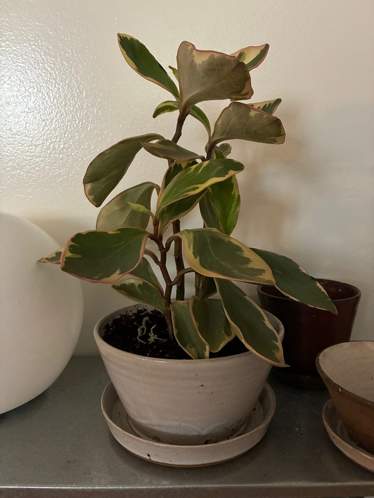
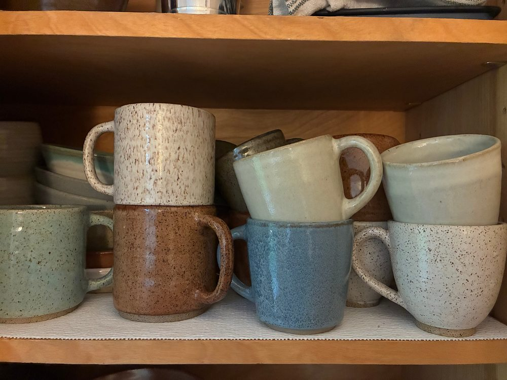
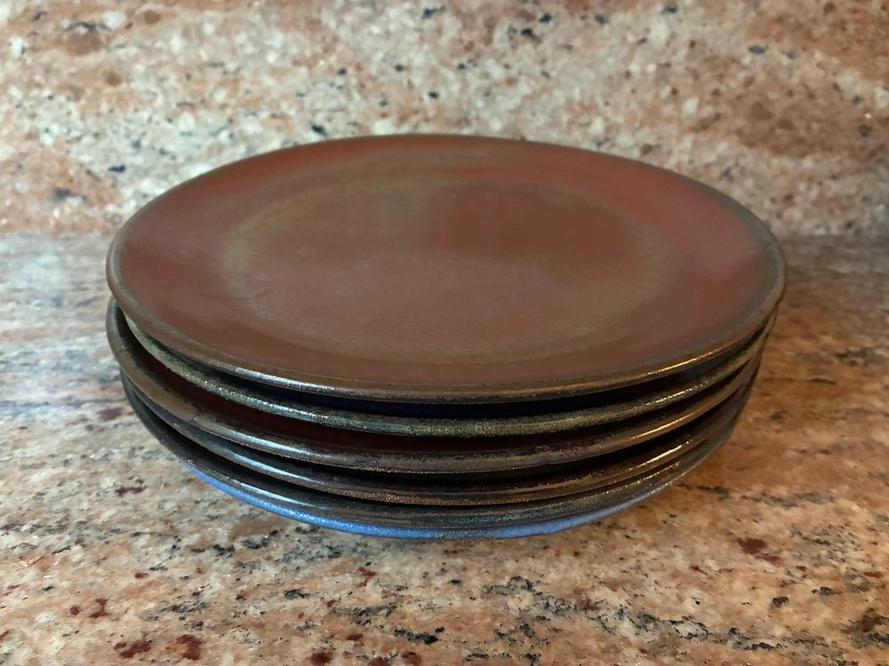
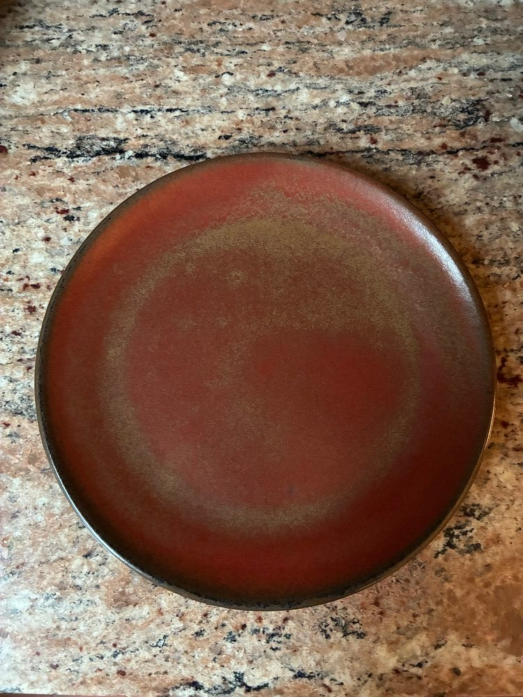
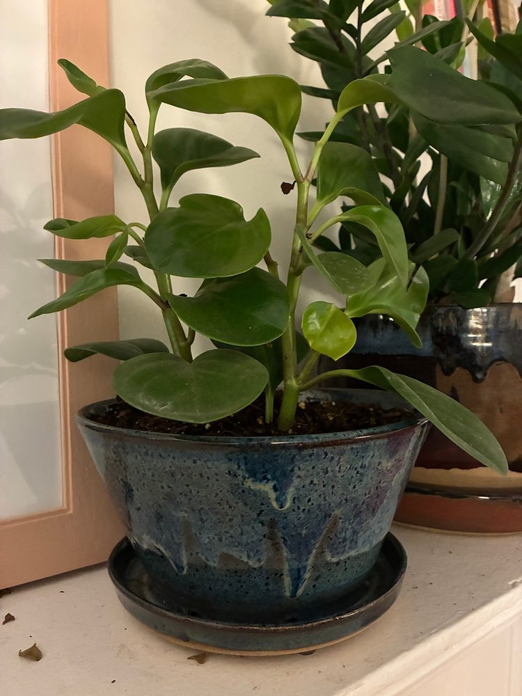
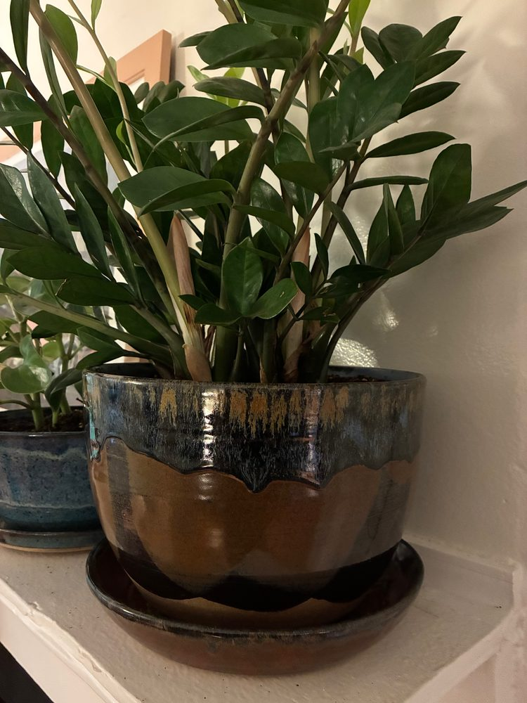
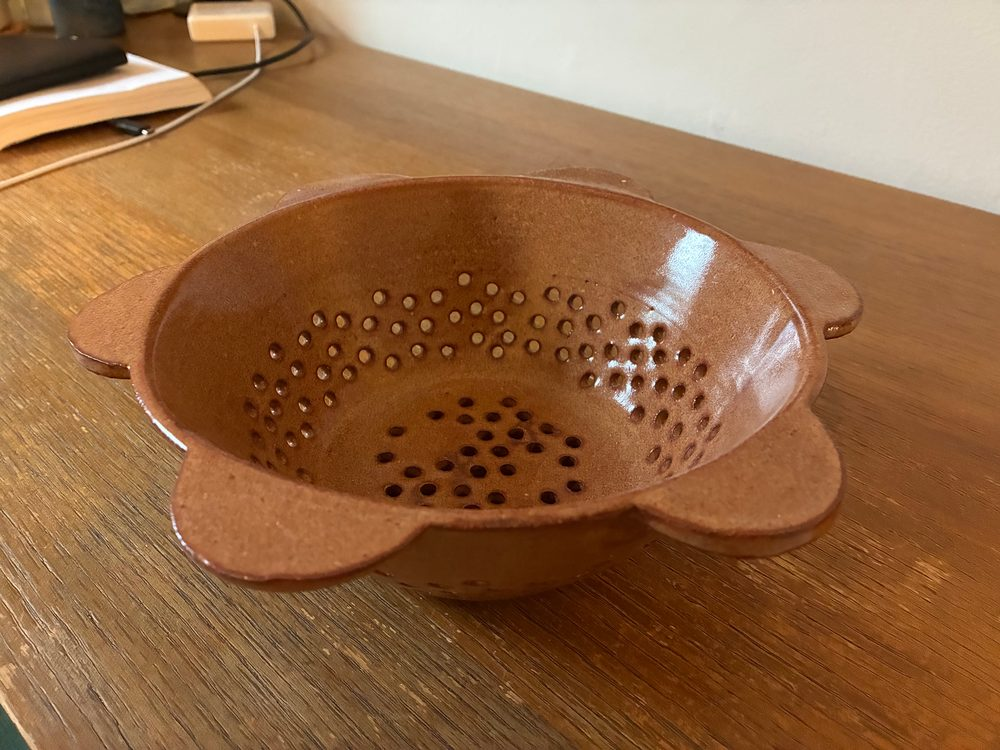
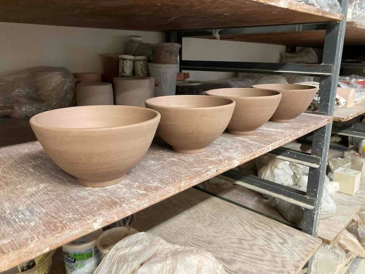
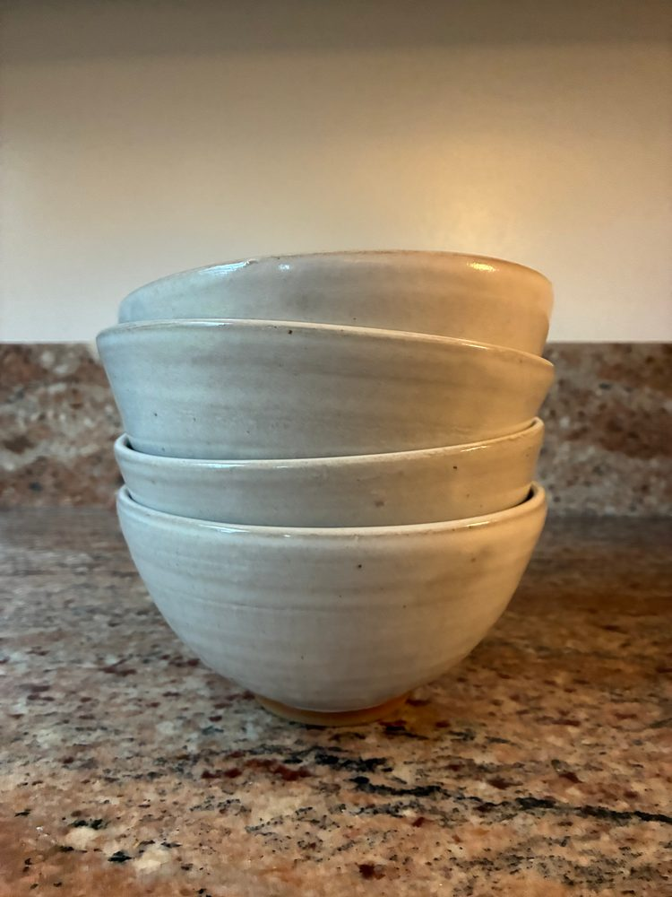

union
pots
Union Pots is a pottery practice based out of Clayworks on Columbia, two blocks from Union Street in Brooklyn, New York City. I make functional pieces such as bowls, mugs, plates, coffee dosing cups and planters. To me the word union signifies coherence and strength, good qualities for a pot to have.
— James




Then I entered a strongroom of vocabulary Where words like urns that had come through the fire Stood in their bone-dry alcoves next a kiln…




